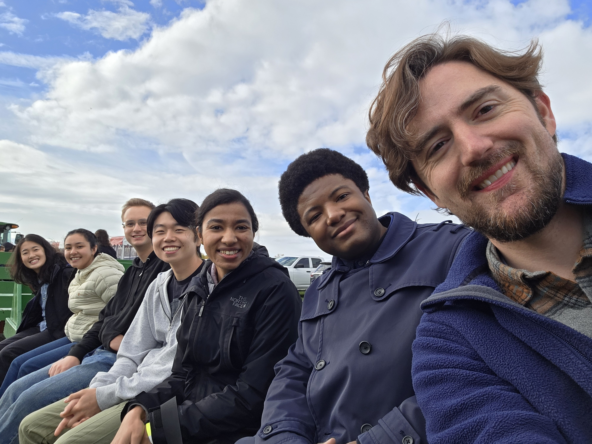
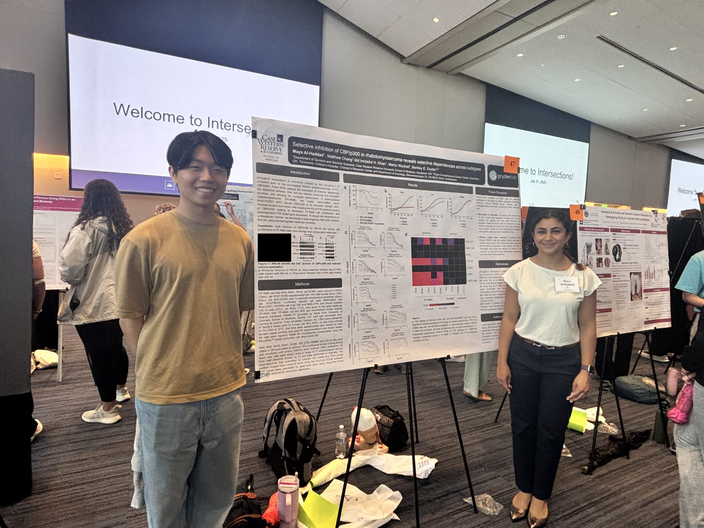

News
Case Western Reserve University, October 2025
Lab outing with the Gryder lab at Patterson Farm! We spent the day apple picking and enjoying the crisp fall weather together. From left to right: Diana, Nathalia, Teagan, me, Bhava, Yaw, and Berkley.
Case Western Reserve University, July 2025
Maya, an undergrad in the Gryder lab, presented her research at Intersections! She shared preliminary findings about the effect IHK-44, a novel CBP/p300 inhibitor, has on cell proliferation in FP-RMS, FN-RMS, and non-malignant myoblasts cell lines. Future directions aim to profile IHK-44 through the Broad Institute's PRISM screen as part of the DepMap project and assess IHK-44's mechanism of cell cycle arrest and apoptosis.
Case Western Reserve University, May 2025

I graduated from Case Western Reserve University with my bachelor's in Chemistry and minors in Mathematics and Computer Science. I’m deeply grateful to the mentors who guided me, the collaborators who challenged me, and the friends who supported me throughout this journey. Special thanks to Berkley Gryder, Matthew Bertin, Fu-Sen Liang, Chris Butler, and Terri Contenza. Looking ahead, I’ll remain in Cleveland to work as a research assistant in the Gryder lab while applying to PhD programs. Excited for what’s next!